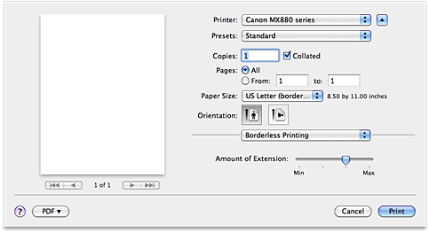

- Amount of Extension
-
Use this slider to adjust the amount of the document that extends off the paper.
Moving the slider to the right makes the amount larger and moving the slider to the left makes the amount smaller.
This dialog allows you to adjust the amount of the document that extends off the paper when borderless printing is performed.
Use this slider to adjust the amount of the document that extends off the paper.
Moving the slider to the right makes the amount larger and moving the slider to the left makes the amount smaller.